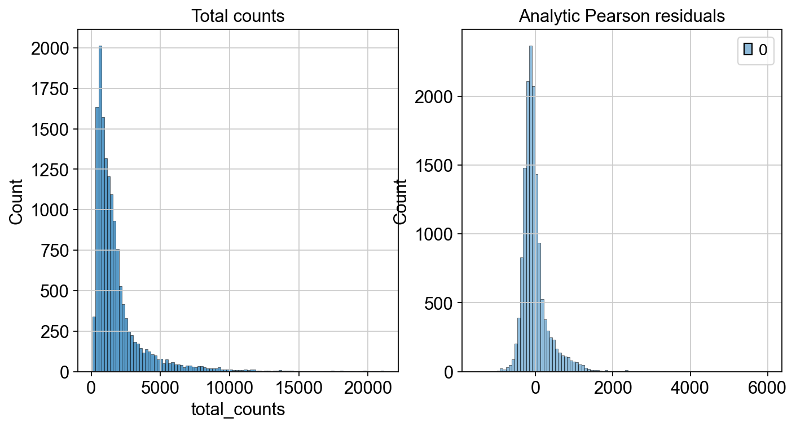

8. Normalization#
8.1. Motivation#
Up to this point, we removed low-quality cells, ambient RNA contamination, and doublets from the dataset and the data is available as a count matrix in the form of a numeric matrix of shape cells x genes.
These counts represent a molecule’s capture, reverse transcription and sequencing in the scRNA-seq experiment.
Each of these steps adds a degree of variability to the measured count depth for identical cells, so the difference in gene expression between cells in the count data might simply be due to sampling effects.
This means that the dataset and therefore the count matrix still contains widely varying variance terms.
Analyzing the dataset is often challenging as many statistical methods assume data with uniform variance structure.
Gamma-Poisson distribution
A theoretically and empirically established model for UMI data is the Gamma-Poisson distribution which implies a quadratic mean-variance relation with \(\operatorname{Var}[Y] = \mu + \alpha \mu^2\) with mean \(\mu\) and overdispersion \(\alpha\). For \(\alpha=0\) this is the Poisson distribution and \(\alpha\) describes the additional variance on top of the Poisson.
Normalization aims to adjust the raw counts in the dataset for variable sampling effects by scaling the observable variance to a specified range. Several normalization techniques are used in practice varying in complexity.
A recent benchmark published by Ahlmann-Eltze and Huber[Ahlmann-Eltze and Huber, 2023] compared 22 different normalization algorithms. Notably, a benchmark that also compares the impact of the normalization on a variety of different downstream analysis tasks is still outstanding. We advise analysts to choose the normalization method carefully and always evaluate based on the subsequent analysis task.
This chapter will introduce three different normalization techniques, the shifted logarithm transformation, scran normalization and analytic approximation of Pearson residuals. The shifted logarithm works beneficial for stabilizing variance for subsequent dimensionality reduction and identification of differentially expressed genes. Scran was extensively tested and used for batch correction tasks and analytic Pearson residuals are well suited for selecting biologically variable genes and identification of rare cell types.
We first import all required Python packages and load the dataset for which we filtered low-quality cells, removed ambient RNA, and scored doublets.
import logging
import lamindb as ln
import numpy as np
import rpy2.rinterface_lib.callbacks as rcb
import rpy2.robjects as ro
import scanpy as sc
import seaborn as sns
from matplotlib import pyplot as plt
from rpy2.robjects import numpy2ri, pandas2ri
from rpy2.robjects.conversion import localconverter
from scipy.sparse import issparse
# Suppress verbose logging from Scanpy
sc.settings.verbosity = 0
# Set figure parameters for clean, minimal plots
sc.settings.set_figure_params(dpi=80, facecolor="white", frameon=False)
assert ln.setup.settings.instance.slug == "theislab/sc-best-practices"
ln.track()
rcb.logger.setLevel(logging.ERROR)
%load_ext rpy2.ipython
af = ln.Artifact.connect("theislab/sc-best-practices").get(
key="preprocessing_visualization/s4d8_quality_control.h5ad", is_latest=True
)
adata = af.load()
adata
AnnData object with n_obs × n_vars = 14814 × 20223
obs: 'n_genes_by_counts', 'log1p_n_genes_by_counts', 'total_counts', 'log1p_total_counts', 'pct_counts_in_top_20_genes', 'total_counts_mt', 'log1p_total_counts_mt', 'pct_counts_mt', 'total_counts_ribo', 'log1p_total_counts_ribo', 'pct_counts_ribo', 'total_counts_hb', 'log1p_total_counts_hb', 'pct_counts_hb', 'outlier', 'mt_outlier', 'soupx_groups', 'scDblFinder_score', 'scDblFinder_class'
var: 'gene_ids', 'feature_types', 'genome', 'interval', 'mt', 'ribo', 'hb', 'n_cells_by_counts', 'mean_counts', 'log1p_mean_counts', 'pct_dropout_by_counts', 'total_counts', 'log1p_total_counts', 'n_cells'
layers: 'counts', 'soupX_counts'
We can now inspect the distribution of the raw counts which we already calculated during quality control. This step can be neglected during a standard single-cell analysis pipeline, but might be helpful to understand the different normalization concepts.
p1 = sns.histplot(adata.obs["total_counts"], bins=100, kde=False)
{kind=link}
8.2. Shifted logarithm#
The first normalization technique we will introduce is the shifted logarithm which is based on the delta method [Dorfman, 1938]. The delta method applies a nonlinear function \(f(Y)\) to the raw counts \(Y\) and aims to make the variances across the dataset more similar.
The shifted logarithm tackles this by
with \(y\) being the raw counts, \(s\) being a so-called size factor and \(y_0\) describing a pseudo-count. The size factors are determined for each cell to account for variations in sampling effects and different cell sizes. The size factor for a cell \(c\) can be calculated by
with \(g\) indexing different genes and \(L\) describing a target sum. There are different approaches to determine the size factors from the data. We will leverage the scanpy default in this section with \(L\) being the median raw count depth in the dataset. Many analysis templates use fixed values for \(L\), for example \(L=10^5\), or \(L=10^6\) resulting in values commonly known as counts per million (CPM). For a beginner, these values may seem arbitrary, but it can lead to much larger overdispersions than typically seen in single-cell datasets.
Overdispersion
Overdispersion describes the presence of a greater variability in the dataset than one would expect.
The shifted logarithm is a fast normalization technique, outperforms other methods for uncovering the latent structure of the dataset (especially when followed by principal component analysis), and works beneficial for stabilizing variance for subsequent dimensionality reduction and identification of differentially expressed genes.
We will now inspect how to apply this normalization method to our dataset.
The shifted logarithm can be conveniently called with scanpy by running pp.normalize_total with target_sum=None.
We are setting the inplace parameter to False as we want to explore three different normalization techniques in this tutorial.
The second step now uses the scaled counts and we obtained the first normalized count matrix.
scales_counts = sc.pp.normalize_total(adata, target_sum=None, inplace=False)
# log1p transform
adata.layers["log1p_norm"] = sc.pp.log1p(scales_counts["X"], copy=True)
We can now inspect how the distribution of our counts changed after we applied the shifted logarithm and compare it to the total count from our raw (but filtered) dataset.
fig, axes = plt.subplots(1, 2, figsize=(10, 5))
p1 = sns.histplot(adata.obs["total_counts"], bins=100, kde=False, ax=axes[0])
axes[0].set_title("Total counts")
p2 = sns.histplot(adata.layers["log1p_norm"].sum(1), bins=100, kde=False, ax=axes[1])
axes[1].set_title("Shifted logarithm")
plt.show()

A second normalization method, which is also based on the delta method, is Scran’s pooling-based size factor estimation method. Scran follows the same principles as the shifted logarithm by calculating \(f(y) = \log(\frac{y}{s}+y_0)\) with \(y\) being the raw counts, \(s\) the size factor and \(y_0\) describing a pseudo-count. The only difference now is that Scran leverages a deconvolution approach to estimate the size factors based on a linear regression over genes for pools of cells. This approach aims to better account for differences in count depths across all cells present in the dataset.
Cells are partitioned into pools and Scran estimates pool-based size factors using a linear regression over genes. Scran was extensively tested for batch correction tasks and can be easily called with the respective R package.
Scran’s pooling-based size factor estimation method
Scran estimates size factors for single cells by first pooling cells (combining the counts from multiple cells into a single “pseudo-sample”, or pool, by summing their gene expression values) into overlapping groups to reduce noise. It calculates size factors for these pools using gene-wise comparisons (via linear regression), then uses a deconvolution step to infer individual cell size factors from the pooled estimates. This approach improves normalization in sparse single-cell RNA-seq data by leveraging shared information across cells.
from scipy.sparse import csr_matrix
%%R
library(scran)
library(BiocParallel)
scran requires a coarse clustering input to improve size factor estimation performance.
In this tutorial, we use a simple preprocessing approach and cluster the data at a low resolution to get an input for the size factor estimation.
The basic preprocessing includes assuming all size factors are equal (library size normalization to counts per million - CPM) and log-transforming the count data.
# Preliminary clustering for differentiated normalisation
adata_pp = adata.copy()
sc.pp.normalize_total(adata_pp)
sc.pp.log1p(adata_pp)
sc.pp.pca(adata_pp, n_comps=15)
sc.pp.neighbors(adata_pp)
sc.tl.leiden(
adata_pp, key_added="groups", flavor="igraph", n_iterations=2, directed=False
)
We now add data_mat and our computed groups into our R environment.
data_mat = adata_pp.X.T
# convert to CSC if possible. See https://github.com/MarioniLab/scran/issues/70
if issparse(data_mat):
if data_mat.nnz > 2**31 - 1:
data_mat = data_mat.tocoo()
else:
data_mat = data_mat.tocsc()
# Convert sparse matrix to dense numpy array
data_mat = data_mat.toarray()
with localconverter(ro.default_converter + numpy2ri.converter):
ro.globalenv["data_mat"] = data_mat
with localconverter(ro.default_converter + pandas2ri.converter):
ro.globalenv["input_groups"] = adata_pp.obs["groups"]
We can now also delete the copy of our anndata object, as we obtained all objects needed in order to run scran.
del adata_pp
We now compute the size factors based on the groups of cells we calculated before.
%%R -o size_factors
size_factors = sizeFactors(
computeSumFactors(
SingleCellExperiment(
list(counts=data_mat)),
clusters = input_groups,
min.mean = 0.1,
BPPARAM = MulticoreParam()
)
)
We save size_factors in .obs and are now able to normalize the data and subsequently apply a log1p transformation.
adata.obs["size_factors"] = size_factors
scran = adata.X / adata.obs["size_factors"].values[:, None]
scran_logged = np.log1p(scran)
adata.layers["scran_normalization"] = csr_matrix(scran_logged)
fig, axes = plt.subplots(1, 2, figsize=(10, 5))
p1 = sns.histplot(adata.obs["total_counts"], bins=100, kde=False, ax=axes[0])
axes[0].set_title("Total counts")
p2 = sns.histplot(
adata.layers["scran_normalization"].sum(1), bins=100, kde=False, ax=axes[1]
)
axes[1].set_title("log1p with Scran estimated size factors")
plt.show()

8.3. Analytic Pearson residuals#
The third normalization technique we are introducing in this chapter is the analytic approximation of Pearson residuals. This normalization technique was motivated by the observation that cell-to-cell variation in scRNA-seq data might be confounded by biological heterogeneity with technical effects. The method utilizes Pearson residuals from ‘regularized negative binomial regression’ to calculate a model of technical noise in the data. It explicitly adds the count depth as a covariate in a generalized linear model. [Germain et al., 2020] showed in an independent comparison of different normalization techniques that this method removed the impact of sampling effects while preserving cell heterogeneity in the dataset. Notably, analytic Pearson residuals do not require downstream heuristic steps like pseudo-count addition or log transformation. Furthermore, [Lause et al., 2021] and [Klebanoff, 2023] recommend the use of approximate analytic Pearson residuals as a robust and effective normalization method for single-cell RNA-seq UMI data. The output of this method is normalized values that can be positive or negative. Negative residuals for a cell and gene indicate that fewer counts are observed than expected compared to the gene’s average expression and cellular sequencing depth. Positive residuals indicate more counts respectively. Analytic Pearson residuals are implemented in scanpy and can directly be calculated on the raw count matrix.
Pearson residual
A Pearson residual is a measure used in statistical modeling to evaluate how well a model’s predicted values match the observed data. It tells you how far off a prediction is, taking into account the variability expected under the model.
The Pearson residual is given by:
where:
\(y_i\) is the observed value
\(\hat{\mu}_i\) is the model’s predicted value for that observation
\(\hat{V}_i\) is the estimated variance for that observation
analytic_pearson = sc.experimental.pp.normalize_pearson_residuals(adata, inplace=False)
adata.layers["analytic_pearson_residuals"] = csr_matrix(analytic_pearson["X"])
fig, axes = plt.subplots(1, 2, figsize=(10, 5))
p1 = sns.histplot(adata.obs["total_counts"], bins=100, kde=False, ax=axes[0])
axes[0].set_title("Total counts")
p2 = sns.histplot(
adata.layers["analytic_pearson_residuals"].sum(1), bins=100, kde=False, ax=axes[1]
)
axes[1].set_title("Analytic Pearson residuals")
plt.show()
The history saving thread hit an unexpected error (OperationalError('unable to open database file')).History will not be written to the database.
{kind=link}

We applied different normalization techniques to our dataset and saved them as separate layers to our anndata object. Depending on the downstream analysis task it can be favourable to use a differently normalized layer and assess the result.
The code below is to save the adata object on our database.
af = ln.Artifact.from_anndata(
adata,
key="preprocessing_visualization/s4d8_normalization.h5ad",
description="anndata after three different normalization methods",
).save()
af
8.4. References#
Constantin Ahlmann-Eltze and Wolfgang Huber. Comparison of transformations for single-cell RNA-seq data. Nature Methods, 2023. URL: https://www.nature.com/articles/s41592-023-01814-1, arXiv:https://www.nature.com/articles/s41592-023-01814-1.pdf, doi:10.1038/s41592-023-01814-1.
RA Dorfman. A note on the! d-method for finding variance formulae. Biometric Bulletin, 1938.
Pierre-Luc Germain, Anthony Sonrel, and Mark D. Robinson. pipeComp, a general framework for the evaluation of computational pipelines, reveals performant single cell rna-seq preprocessing tools. Genome Biology, 21(1):227, September 2020. URL: https://doi.org/10.1186/s13059-020-02136-7, doi:10.1186/s13059-020-02136-7.
Victor Klebanoff. Normalization and gene selection for single-cell rna-seq umi data using sampling-adjusted sums of squares of pearson residuals with a poisson model. bioRxiv, December 2023. Preprint. URL: https://doi.org/10.1101/2023.12.21.572783, doi:10.1101/2023.12.21.572783.
Jan Lause, Philipp Berens, and Dmitry Kobak. Analytic pearson residuals for normalization of single-cell rna-seq umi data. Genome Biology, 22(1):258, September 2021. URL: https://doi.org/10.1186/s13059-021-02451-7, doi:10.1186/s13059-021-02451-7.
8.5. Contributors#
We gratefully acknowledge the contributions of:
8.5.2. Reviewers#
Lukas Heumos